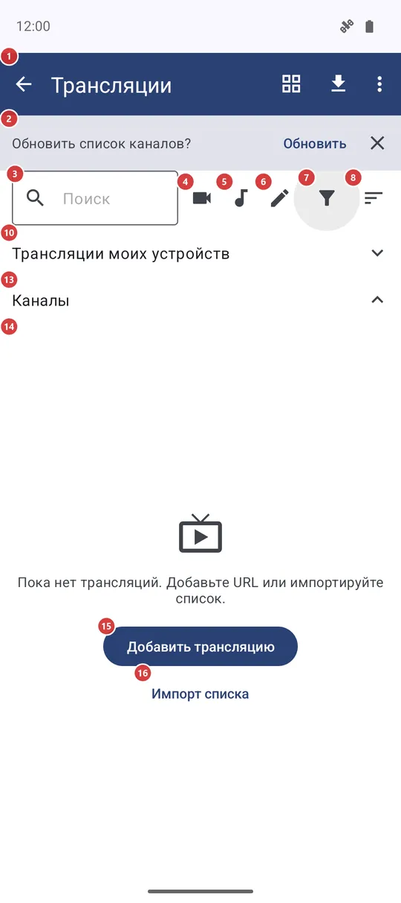
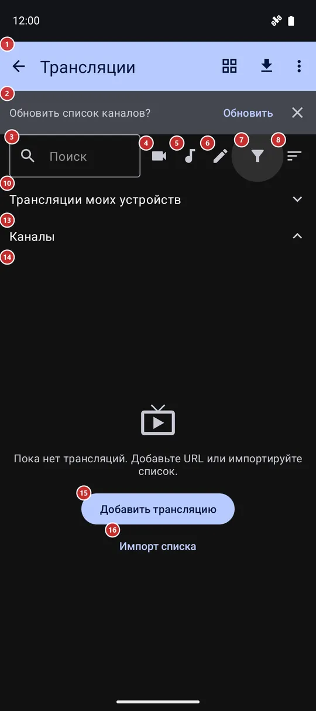

Трансляции
Для чего этот экран
«Трансляции» - ваш список интернет-радио, телеканалов и камер. Добавьте трансляцию по адресу, загрузите встроенный каталог или готовый плейлист, найдите канал и запустите: радио играет прямо на этом экране, видео открывается в полноэкранном плеере.


Порядок действий
- Откройте «Трансляции» из программ в списке ресурсов. Пока список пуст, «Добавить трансляцию» 15 принимает адрес одной станции или канала, а «Импорт списка» 16 загружает готовый список.
- Чтобы наполнить список встроенным каталогом, нажмите «Импорт каталога» 23 на панели. Ту же загрузку может предложить баннер 2 при открытии экрана.
- Найдите канал: введите несколько букв в «Поиск» 3, нажмите кнопку видео, аудио или своих трансляций (4, 5, 6) либо откройте «Фильтр» 7 - категория, рубрика, язык и страна. «Подборки» 9 - наборы, составленные вручную; они видны, если есть в каталоге.
- «Сортировка» 8 задаёт порядок, а кнопка вида 22 переключает строки и плитки.
- Нажмите канал в списке 14, чтобы запустить. Радио играет прямо здесь, внизу появляется «Остановить» 21; видео открывается в полноэкранном плеере.
- Нажмите канал и удерживайте, чтобы закрепить. Закреплённые собираются в «Закреплённые» 12 над «Каналы» 13; нажатие на заголовок сворачивает раздел.
- Трансляции ваших других устройств ждут в разделе 10. «Обновить состояние каналов» 27 проверяет, какие каналы отвечают, а «Справка» 29 открывает эту страницу.
Элементы
Панель, поиск и фильтры
1ТрансляцииВерхняя панель: возврат назад, переключатель вида, импорт каталога и меню с остальными командами.
Стрелка, как и системная кнопка «Назад», закрывает экран. Если станция ещё играет в фоне, приложение может сначала спросить, остановить её или оставить играть, и запомнить ваш ответ. Справа находятся переключатель вида (сеткой или списком), «Импорт каталога» и меню с тремя точками; они описаны в группе «Кнопки и меню панели». В альбомной ориентации поле поиска, кнопки видео, аудио и своих трансляций, «Фильтр» и «Сортировка» переезжают на эту панель, чтобы списку хватало высоты.
2Обновить список каналов?Предлагает обновить список каналов из встроенного каталога.
Баннер появляется вверху, только если в настройках, в разделе «Трансляции», пункт «Обновление списка каналов» стоит в положении «Предлагать при открытии», а последнее обновление было больше шести часов назад или не было вовсе. «Обновить» загружает каталог, кнопка закрытия просто убирает баннер. Он не исчезает сам, поэтому можно ответить, когда вам удобно. Пока вы не нажмёте «Обновить», ничего не загружается.
3ПоискСужает список по мере набора.
Введите часть названия канала, рубрики или языка - строки сузятся сразу; крестик в конце очищает поле. Текст не запоминается, поэтому при каждом открытии экрана поле пустое. Поиск работает вместе с фильтрами ниже.
4Показывать только видеоОставляет только видеоканалы, плитками с превью.
Нажмите, чтобы увидеть видеоканалы из каталога и импортированных списков; повторное нажатие возвращает всё. При выборе список переключается на плитки, чтобы показать превью, а после выхода из этого фильтра возвращается прежний вид. Трансляции, добавленные вручную, здесь не считаются - они под кнопкой своих трансляций.
5Показывать только аудиоОставляет только радио и другие аудиоканалы.
Нажмите, чтобы увидеть аудиоканалы из каталога и импортированных списков; повторное нажатие показывает всё. Трансляции, добавленные вручную, - под кнопкой своих трансляций.
6Показывать только добавленные вручную трансляцииОставляет только трансляции, добавленные вами вручную.
Удобно, когда в каталоге тысячи каналов, а нужны ваши несколько. Каналы из импортированного плейлиста своими не считаются. Повторное нажатие снимает фильтр.
7ФильтрОткрывает все фильтры: тип, категория, язык, рубрика, страна и только закреплённые.
Вверху окна - «Все», «Аудио», «Видео» и «Свои», ниже «Категория» и «Язык», «Рубрика» (только если в каталоге есть рубрики) и «Страна». Каждая строка открывает список с поиском. «Только закреплённые» оставляет лишь закреплённые вами каналы. Выбор применяется сразу; «ОК» закрывает окно, «Сбросить фильтры» очищает всё. Пока включён любой фильтр, значок меняется, а ваш выбор запоминается до следующего раза.
8СортировкаВыбирает порядок каналов.
Варианты: «По названию», «По рубрике», «По языку», «По стране» и «Недавно добавленные»; порядок запоминается. Закреплённые каналы идут в своём разделе в вашем порядке, поэтому сортировка меняет раздел «Каналы». Если выбрана подборка, сортировка заменяет порядок составителя, но подборка остаётся.
Списки каналов
9Трансляции моих устройствПрямые трансляции ваших других устройств; раздел свёрнут, пока вы его не откроете.
Раздел виден, только когда телефон вошёл на сервер обмена (см. «Мои устройства»). Он начинает свёрнутым, а приложение ищет трансляции, только пока он открыт, - так экономится трафик. После раскрытия сначала видно «Ищем трансляции..», затем список: название, имя устройства и режим - только аудио, только камера или камера и аудио. Нажмите трансляцию, чтобы добавить её в каналы; сообщение скажет, добавлена она, обновлена или уже была, а запускать её вы будете из списка «Каналы». Трансляция, которую эта версия не умеет воспроизводить, помечена.
10О трансляциях и castОткрывает страницу сайта проекта о трансляциях и cast.
Кнопка видна, только пока раздел выше раскрыт. Страница открывается в браузере и объясняет, как принять трансляцию с другого устройства.
11ЗакреплённыеЗакреплённые каналы - всегда сверху.
Раздел появляется, как только закреплён хотя бы один канал, и исчезает, когда закреплённых нет. Нажмите заголовок, чтобы свернуть раздел и отдать всё место остальным каналам; ещё раз - чтобы развернуть. Сворачивание не запоминается между запусками. В этом разделе меню с тремя точками у канала дополнительно предлагает «Вверх», «Вниз» и «В самый верх» - так вы задаёте свой порядок. Часы показывают первыми эти же каналы, а «Закреплённые трансляции часов» в Wear-компаньоне редактируют именно этот набор.
12КаналыВсе каналы, которые не закреплены.
Здесь каталог, импортированные списки и добавленные вами трансляции. Пока есть закреплённые каналы, нажатие на заголовок сворачивает этот раздел и отдаёт весь экран закреплённым. Если закреплённых нет, заголовок ничего не делает.
13Список каналовСами каналы: нажмите, чтобы запустить, удерживайте, чтобы закрепить.
В строке - логотип или флаг канала, название и адрес, маленькие метки региона, рубрики, страны и языка, а также отметка состояния: пустое кольцо - ещё не запускался, галочка - запускался отсюда, восклицательный знак - последняя попытка не удалась. Нажмите строку, чтобы запустить. Радио продолжает играть на этом экране с кнопкой «Остановить» внизу; повторное нажатие на играющую строку тоже останавливает его. Видео открывается в полноэкранном плеере. Без сети приложение сразу говорит об этом, а не ждёт. Если станция не отвечает, окно предлагает «Повторить попытку» или «Удалить»; когда телефон не в сети, остаётся только «Повторить попытку».
Нажмите строку и удерживайте либо нажмите значок кнопки закрепления, чтобы закрепить или открепить канал. Три точки у строки открывают остальное: «В избранное» (когда включено «Избранное»), «На домашний экран», «Изменить» (для трансляций, добавленных вручную), «Передать на часы» и «Открыть на часах» (когда включён Wear-компаньон), «Открыть в VR» (для видеоканалов, если подключён шлем), «Информация о канале», «Отправить ссылку» и «Удалить». В режиме плиток плитка делает то же самое, со значком закрепления, а «Закрепить» и «Открепить» лежат в меню. Правый щелчок мыши открывает то же меню.
- Отмена
- «Удалить» сначала спрашивает, затем убирает канал из списка. Отмены нет: канал из каталога может вернуться со следующим обновлением каталога, а введённая вами трансляция пропадает, пока вы не добавите её адрес снова.
14Добавить трансляциюОткрывает окно, где вводится адрес трансляции.
Это сообщение с двумя кнопками появляется, когда показывать нечего - при первом запуске или если поиск и фильтры ничего не нашли. «Добавить трансляцию» открывает то же окно, что и команда в меню панели: адрес, необязательное название и необязательный выбор языков.
15Импорт спискаЗагружает сразу целый список каналов.
Приложение спросит, как именно: «Импорт каталога» загружает встроенный каталог, «Импорт по URL» берёт адрес плейлиста, который у вас уже есть. Оба варианта есть и на панели.
Прокрутка и воспроизведение
16В начало спискаПереходит к первому каналу.
Четыре круглые кнопки у правого края относятся к списку «Каналы» и появляются, только когда он длиннее экрана. Эта кнопка видна, когда вы ушли от начала списка.
17Страница вверхПрокручивает список на страницу вверх.
Появляется вместе с «В начало списка», когда вы не в начале списка.
18Страница внизПрокручивает список на страницу вниз.
Видна, пока ниже есть ещё каналы, и пропадает в конце списка.
19В конец спискаПереходит к последнему каналу.
Полезно в длинном каталоге, когда нужный канал при такой сортировке оказывается в конце. Пропадает, когда вы уже внизу.
20ОстановитьОстанавливает радио, которое играет на этом экране.
Тонкая полоса внизу появляется, пока здесь играет станция. В ней название станции и, если станция его передаёт, название песни. «Остановить» прекращает воспроизведение; то же делает нажатие на играющую строку. Если в настройках включено воспроизведение в фоне, станция может играть и после выхода с экрана.
Кнопки и меню панели
21Сеткой / СпискомПереключает списки между строками и плитками.
Кнопка показывает вид, который включится следующим: значок сетки, пока на экране строки, и значок списка, пока плитки. Плитки показывают картинку каждого канала - живой кадр, превью или логотип - и удобны для просмотра видео; строки оставляют больше места для текста. Закреплённый и основной разделы переключаются вместе, а выбор запоминается. В режиме плиток движение пальца вниз по списку обновляет картинки видимых плиток.
22Импорт каталогаЗагружает встроенный каталог каналов и добавляет его в список.
Нужна сеть. Когда загрузка закончится, сообщение скажет, сколько каналов добавлено, обновлено и удалено. Сразу после обновления приложение может предложить загрузить картинки каналов и логотипы станций; это отдельные дополнительные загрузки, от каждой можно отказаться. Трансляции, которые вы добавили или импортировали сами, каталог не меняет.
Окно добавления трансляции
29URL трансляции (http, https, rtsp)Адрес трансляции, которую вы добавляете.
Введите или вставьте адрес, который начинается с http, https или rtsp, - радиостанция, телеканал, камера. Аудио или видео приложение определяет по адресу; позже это можно поменять в окне «Изменить» у канала. В режиме «Импорт списка» то же поле принимает адрес плейлиста, а заголовок окна подсказывает, где вы находитесь. «ОК» добавляет, «Отмена» закрывает окно без сохранения.
30Название (необязательно)Название канала.
Показывается в списке вместо адреса. Если оставить поле пустым, берётся имя сайта из адреса. Это поле есть только в окнах добавления и изменения - импортированный плейлист приносит свои названия.
31Язык аудиоЯзык звука, с которого канал начнёт играть.
«По умолчанию» следует общим настройкам трансляций, а «Английский», «Русский» или «Украинский» действуют только для этого канала. Это важно для каналов с несколькими звуковыми дорожками. Строка есть при добавлении одного канала, но не при импорте списка.
32Язык субтитровЯзык субтитров для этого канала.
«По умолчанию» следует общим настройкам трансляций, либо выберите «Английский», «Русский» или «Украинский» только для этого канала. Работает вместе со строкой «Субтитры» ниже.
33СубтитрыВключает или выключает субтитры для этого канала.
«По умолчанию» следует общим настройкам, «Включены» показывает субтитры, если они есть у канала, «Выкл» скрывает их. Выбор привязан к адресу канала и сохраняется, когда вы его изменяете.
Окно «Сохранить локальную копию»
34Сохранить локальную копию?Окно в плеере, которое предлагает скачать файл вместо воспроизведения по сети.
Плеер показывает его, когда решает, что файл из сетевой папки или облака при текущей скорости не будет играть плавно. В окне указаны размер файла, скорость соединения и скорость, которая нужна файлу, примерное время загрузки, свободное место на телефоне и куда ляжет копия. Если места не хватает, появляется предупреждение, а «Сохранить локальную копию» отключается. Окно относится к файлам сетевых ресурсов и облака, а не к живым интернет-каналам.
35Сохранить локальную копиюСкачивает файл на телефон и воспроизводит оттуда.
Окно с ходом загрузки позволяет её отменить. Когда загрузка закончится, воспроизведение продолжится с локальной копии и сеть больше не понадобится. Кнопка отключена, если на телефоне нет места под файл и запас в десятую часть. При выходе из плеера вас могут спросить, оставить копию или удалить, если это ещё не решено настройкой кэша трансляций.
- Отмена
- Если отменить загрузку, неполный файл удаляется. Оригинал на сервере или в облаке не меняется никогда, а локальную копию можно удалить, когда плеер спросит.
- Сочетание клавиш
- Enter
36Попробовать всё равноОставляет воспроизведение по сети как было.
Закрывает окно и продолжает играть по сети. Пока соединение медленное, возможны паузы. Ничего не скачивается и не меняется.
37ОтменаОтклоняет предложение.
Закрывает окно и продолжает воспроизведение по сети - так же, как «Попробовать всё равно». То же делает системный жест «Назад» или касание вне окна.